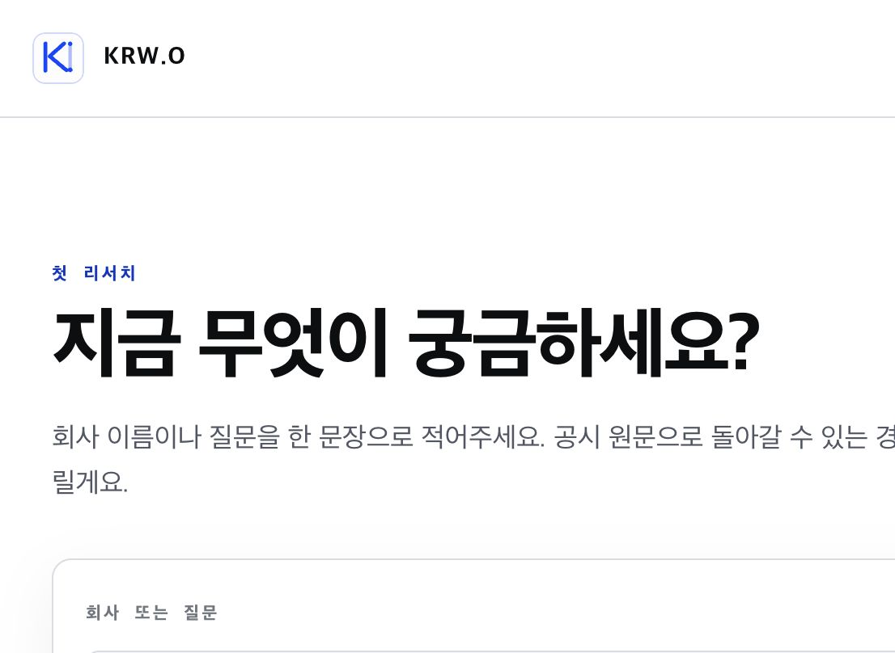

추천 흐름은 회사 선택 → 그 회사의 첫 공시 변화 확인 → 필요한 순간에 짧은 안내입니다. 사용자가 선택한 맥락 없이 회사 목록과 제품 설명을 먼저 보게 하면, KRW.O의 핵심 가치인 “질문에 대한 근거”까지 가는 시간이 늘어납니다.
결론
“관심 회사가 있나요?”라는 한 가지 질문은 유지하되, 자유 입력 질문을 첫 화면의 주인공으로 두지 않는 편이 더 낫습니다. 회사가 있는 사람은 바로 선택하게 하고, 없는 사람에게만 오늘의 공시 변화 둘러보기라는 안전한 우회로를 제공합니다. 일반 회사 목록은 탐색 도구이지 첫 성공 자체가 아닙니다.
권장 첫 세션
1관심 회사 있나요?있으면 회사 검색·선택, 없으면 회사 목록으로 이동.
2회사 맥락으로 질문선택한 회사 칩과 실적·리스크·성장 시작 질문을 함께 제시.
3근거 확인으로 완료답변 뒤 원문 확인을 완료 기준으로 두고 필요한 안내만 표시.
사용자 제안 반영
관심 회사가 있으면 회사 선택 → 해당 회사 맥락의 질문으로 바로 들어갑니다. 관심 회사가 없으면 회사 목록 → 회사 선택 → 동일한 질문 흐름으로 이어집니다. 목록에서는 기능 전부를 설명하는 투어가 아니라, 회사 선택·질문·원문 확인의 세 단계만 해당 행동 옆에 짧게 보여줍니다.
개선 제안
최우선 · 첫 화면
회사 선택을 ‘개인화’로 쓰고, 질문 입력은 두 번째 행동으로 내리기
첫 화면의 제목을 “관심 있는 회사가 있나요?”로 바꾸고, “회사 선택”과 “아직 없어요”의 두 갈래만 둡니다. 선택한 뒤에는 회사 칩이 붙은 질문 화면에서 실적·리스크·성장 시작 질문을 제시합니다.
현재의 넓은 질문 입력은 경험 많은 사용자에게는 좋지만, 처음 온 사람에게는 “무엇을 물어야 하지?”라는 빈 화면 부담을 만듭니다. 회사 선택은 KRW.O가 바로 공시 맥락을 붙일 수 있는 최소한의 개인화 신호입니다.
Appcues의 온보딩 사례와 Userpilot의 사례 모두 첫 성공에 맞는 목표/맥락을 먼저 받고, 안내를 점진적으로 공개하는 패턴을 강조합니다. 이 판단은 해당 원칙을 KRW.O의 기업 리서치 흐름에 적용한 설계 추론입니다.
높음 · 회사 선택 직후
선택 후에는 회사 목록이 아니라 ‘회사 맥락의 질문’으로 바로 보내기
“회사 선택 → 회사 목록 → 온보딩 설명”은 두 번의 탐색을 요구합니다. 선택한 회사의 질문 화면에서 최근 실적 변화, 새 리스크, 성장 신호를 시작 질문으로 보여주면, 사용자는 회사 맥락을 잃지 않고 바로 리서치를 시작합니다.
회사 목록은 “아직 없어요”를 눌렀을 때의 탐색 화면으로 유지하세요. 그 경우에는 검색창에 초점을 두고, 첫 선택 뒤에는 같은 회사 맥락 질문 흐름으로 합류하게 합니다.
높음 · 제품 설명
설명은 투어 대신 행동에 붙이기
회사 목록 전체를 가리는 순차형 제품 투어는 아직 사용자의 목표가 생기기 전이라 기억되지 않을 가능성이 큽니다. 대신 실제 첫 회사 화면에서만 다음 세 가지를 1문장씩 보여주세요.
최근 변화 — “공시에서 달라진 점부터 확인합니다.”
질문하기 — “이 회사 맥락을 붙여 더 깊게 물어볼 수 있어요.”
원문 확인 — “판단 근거가 된 SEC 원문으로 돌아갑니다.”
측정해야 할 것
완료율보다 다음 순서를 봐야 합니다: 로그인 → 회사 선택, 회사 선택 → 첫 공시 변화 노출, 첫 공시 변화 → 원문 열기, 첫 질문 제출. KRW.O의 활성화는 단순 회사 선택이 아니라 근거를 확인한 첫 리서치로 두는 것이 맞습니다.
현재 화면에서 유지할 점
차분한 에디토리얼 톤
과장 없이 “원문으로 돌아갈 수 있다”는 약속을 전면에 둔 점이 제품 신뢰와 맞습니다.
탈출구가 있는 구조
강제 설정 없이 회사 목록으로 갈 수 있는 보조 동작은 유지해야 합니다.
참고 화면

현재 화면 자유 질문을 첫 행동으로 둔 KRW.O 시작 화면.Appcues · Web 목표 기반 첫 행동, 점진적 안내, 맥락형 빈 상태 패턴을 검토한 자료.Userpilot · Web 개인화와 점진적 공개를 다룬 온보딩 사례 자료.
Lazyweb MCP 도구는 이 환경에 노출되지 않아, 이번 검토는 현재 화면 캡처와 공개 웹 레퍼런스로 작성했습니다. 외부 자료는 원칙을 뒷받침하는 참고이며, 수치 개선을 보장하는 근거로 사용하지 않았습니다.